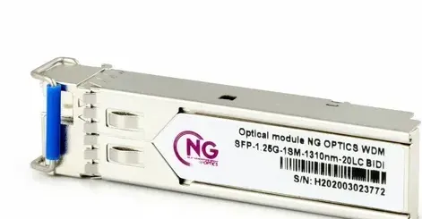
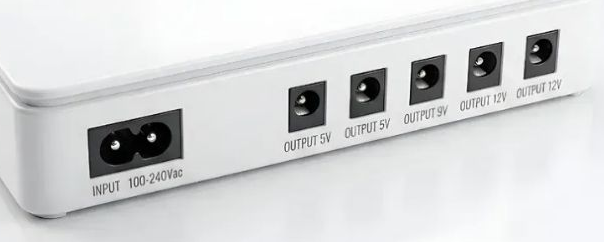
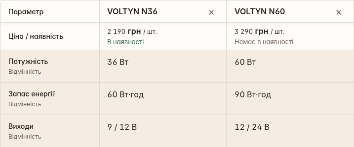

Роль сайту
Від знайденої моделі до правильного рядка кошика
В ASP24 можна знайти обладнання, порівняти пропозиції та підготувати закупівлю. Огляд простежує цей шлях до рядка кошика: чи збігаються обрана модель, одиниця продажу й кількість із тим, що покупець отримує після додавання.
| Що вже допомагає | Що потребує узгодження |
|---|---|
| Пошук за моделлю та артикулом. | Запит за потребою може об’єднувати різне обладнання. |
| Змістовні параметри в порівнянні окремих груп. | Назва, фільтр, фото й опис не завжди дають однакову відповідь. |
| Обране й підготовка кошика. | Потрібно звірити доданий товар і його одиницю продажу. |
Інструменти вибору вже є. Найважливіше — узгодити дані, з якими вони працюють: фільтр має спиратися на підтверджені характеристики, порівняння — показувати відмінності моделей, а кошик — містити саме обрані позиції. Приклади далі показують, де ці зв’язки потребують перевірки. [1–7]
Метод і межі
Досліджено настільні сценарії, збережені стани 9–20 вересня 2026 року та архівні сторінки. Частину пізніших епізодів наведено за попереднім оглядом [1–7]; джерела розрізнено наприкінці документа. Вибірка цільова, тому за нею не визначаємо частоту проблем у каталозі. Замовлень і звернень не надсилали.
Демо ілюструє запропоновані механізми на умовних товарах і цінах. Його дії локальні: це не система продажів компанії.
Пошук
Знайти модель і уточнити потребу
Запит «M1550-C» називає модель, а «для роутера» — потребу, яку ще слід уточнити. У збережених станах 10 вересня 2026 року пошук M1550-C та KP1 Plus знаходив відповідні пропозиції. Запит «для роутера» залишав відкритим питання про тип обладнання. [1]
| Запит | Результат і межа |
|---|---|
| M1550-C / KP1 Plus | Знайдені пропозиції з потрібними позначеннями; перевірено конкретні запити. |
| FHP12A / MED001988 | У попередньому огляді описано точне знаходження вимірювача й роутера. |
| «інтернет без світла» | За попереднім оглядом, на початку були джерела живлення, далі — різне обладнання. |
Перший рядок — первинні збережені стани 10.09; два наступні — опис проходів у попередньому огляді. Це різні приклади, а не повтор одного тесту. [1]
Коли покупець знає назву моделі, пошук має допомогти швидко знайти відповідну пропозицію. Коли відома потреба, але не назва, доречні уточнення: що живити, які виходи потрібні або де прокладатиметься кабель. Різне обладнання в широкій видачі не обов’язково зайве; важливо допомогти продовжити добір.
У демо запит DEMO-U02 знаходить одну умовну модель; позначка «Точний збіг» відділяє її від ширших результатів.
Після пошуку важливо не втратити придатні альтернативи під час фільтрації.
Відбір
Чи залишає фільтр усі придатні моделі
У збереженому проході 10 вересня 2026 року кабельна категорія містила дев’ять карток. Умова Cu залишила чотири, а додавання «У приміщеннях» — дві. Послідовність підтверджує, що ці умови змінювали видачу. [1]
Інший випадок — оптичні модулі. За попереднім оглядом, LC-фільтр залишив два товари, а окремий фільтр «40 км» — один. Водночас у початковому списку були інші назви з такими позначеннями.
| Позиція | До вибору LC | Після вибору LC |
|---|---|---|
| УТП001300 | LC у назві | Залишилася |
| MED000418 / MED000419 | LC у назвах | Відсутні у вибірці |
Результат LC-відбору наведено за попереднім оглядом; первинний протокол цього проходу не відновлено. Назви самі по собі не є еталоном відповідності. [1]

У MED000418 назва й маркування на фото вказують на LC, а опис — на SC/UPC. За цими матеріалами повноту LC-відбору встановити неможливо: спочатку потрібно звірити суперечливий атрибут конкретного виконання. Тоді можна вирішувати, чи мав фільтр залишити цей товар.
Порівняння
Зміст таблиці важливіший за її наявність
У порівнянні GCOM S5110-10TC і S5110-28TC наведено кількість LAN-портів, пропускну здатність та Combo-порти. Такі рядки дозволяють зіставити комутатори за технічними відмінностями. [2]
| Параметр | 10TC | 28TC |
|---|---|---|
| LAN-порти | 8 | 24 |
| Пропускна здатність | 20 Гбіт/с | 56 Гбіт/с |
| Combo-порти | Не заповнено | 4 |
Значення наведено за попереднім оглядом [2]; первинний запис таблиці не відновлено. Порожнє поле означає брак даних, а не нуль портів.
Для кабелів таблиця переважно повторювала назву, ціну й службові поля. Це прогалина в наповненні. Порівняння ONU з UPS має іншу проблему: пристрої виконують різні завдання, тому їм не можна механічно призначити один набір характеристик. [2]
Кількість предметних рядків у вибраних архівних таблицях
| Модель / артикул | Дата знімка | Технічних рядків |
|---|---|---|
| Reyee RG-EW1200G Pro · MED001988 | 19.04.2026 | 16 |
| Reyee RG-EW1200G Pro · MED001988 | 17.05.2026 | 9 |
| NG PON xPON Stick SFP · MED005534 | 08.12.2025 | 14 |
| NG PON xPON Stick SFP · MED005534 | 11.06.2026 | 0 |
| NG LAN UTP CAT-5e Cu 4*2*0.5, 305m · MED000715 | 08.02.2026 | 30 |
| NG LAN UTP CAT-5e Cu 4*2*0.5, 305m · MED000715 | 11.06.2026 | 0 |
Контур — раніший стан, заповнена смуга — пізніший. Кількість предметних пар «параметр — значення» у вибраних архівних таблицях; без заголовків і службових полів. Підрахунок відтворено зі збережених витягів. Нуль не означає відсутності інформації в описі. [3]
У пізнішій архівній таблиці кабелю немає відомостей про провідник, ізоляцію й упаковку, які були в ранішій; опис збережений. Це підстава звірити структуру полів, а не автоматично прийняти старі значення за правильні.
У демо прогалина лишається видимою поряд із відомою відмінністю.
Товарна інформація
Фото й опис не мають суперечити одне одному
На фото й у текстовому описі Mini UPS NG POWER M1550-C загалом по п’ять виходів. Різниться їхній розподіл за напругою: на фото 2+1+2, в описі 1+2+2; для 12 В обидва подання вказують два виходи. Причину розбіжності не встановлено. [4]

| Джерело | 5 В | 9 В | 12 В |
|---|---|---|---|
| Маркування на фото | 2 виходи | 1 вихід | 2 виходи |
| Текст опису | 1 вихід | 2 виходи | 2 виходи |
Покупцеві, якому потрібні два виходи на 9 В, важливо знати, яке подання правильне. Саме фото не встановлює комплектації товару на складі. Після звірення конкретного виконання потрібно узгодити з ним фото й опис.
Ієрархія інформації
На початку картки варто показати модель, ціну за визначену одиницю, наявність і характеристики, від яких залежить вибір. Повну таблицю та інструкції можна розкрити окремо. Обмеження підключення мають бути видимими до додавання товару.
Кошик
Артикул, одиниця, кількість і підсумок
Повідомлення «додано» ще не показує результату. Покупець має бачити в кошику назву, артикул, одиницю продажу, кількість і суму; перевіряльник зіставляє рядок із вибором до натискання. Два історичні епізоди пояснюють потребу такої перевірки, хоча їхніх повних первинних протоколів не відновлено.
| Епізод | Що відомо і що лишилося невстановленим |
|---|---|
| KP1 Plus → XPON Stick | Попередній огляд описує додавання MED005534 після натискання в колонці УТП002251 у двох проходах одного оператора. Повний протокол не відновлено. [5] |
| Патчкорд 4774 | Той самий огляд фіксує 46 203 грн. Одиницю продажу, правильну ціну та причину появи цієї суми не встановлено. [6] |
Для епізоду KP1 Plus потрібно відтворити товари в колонках порівняння та їхній порядок, а потім звірити доданий товар. Колонки не є складом кошика й не доводять причини підміни. Для патчкорду слід перевірити пропозицію й одиницю продажу. Ці епізоди не показують частоти збоїв.
Контрольний приклад на умовних даних
| Що обрано | Одиниця й кількість | Підсумок |
|---|---|---|
| DEMO-U02 | 3 шт. × 2 190 грн/шт. | 6 570 грн |
| DEMO-C04 | 2 бухти × 305 м; 5 190 грн/бухта | 610 м; 10 380 грн |
Синтетичні дані демо. Ці приклади пояснюють правило обліку; вони не підтверджують виправлення реального ASP24.
У демо картка й кошик зберігають ту саму модель. Для кабелю кількість бухт та загальний метраж показані окремо: дві бухти не повинні перетворитися на два метри.
Перевірити в демо: дві бухти — 610 метрів
Кошик зберігає вибрані позиції. Для складної закупівлі з альтернативами й невирішеними питаннями може бути корисний іменований список із примітками. Це один із можливих способів продовжити роботу.
Збереження роботи
Зберегти товар і задум закупівлі
Особистий кабінет містить замовлення та обране. За попереднім оглядом, після виходу й повторного входу в тому самому браузері модель M1550-C знову відображалася в обраному. Цей приклад стосується моделі, а не всього задуму закупівлі; механізм збереження не встановлено. [7]
Під час підготовки закупівлі для об’єкта до переліку моделей додаються кількості, примітки й питання до менеджера. Іменований проєктний список міг би зберігати їх разом. Це пропозиція розвитку; дослідження не перевіряло всіх аналогічних можливостей реального кабінету.
| Результат збереження | Що він утримує |
|---|---|
| Обране | Інтерес до конкретної моделі. |
| Проєктний список | Мету, кандидатів, обраний склад, кількості й примітку. |
| Кошик | Позиції та кількості для наступного кроку закупівлі. |
Авторська модель розподілу завдань, а не опис трьох перевірених функцій реального ASP24.
У демо локальний проєкт зберігає назву, примітку, кандидатів і кількості. Після натискання «Зберегти зміни» запис відновлюється при перезавантаженні.
Пояснення наступного кроку
Архів гарантійної довідки показує позитивну зміну: у квітні 2026 року на різні питання повторювалася загальна відповідь про гарантію виробника; у травні з’явилися окремі пояснення повернення, комплекту та ремонту. Це зміна тексту, не вимір фактичного сервісу. [8]
Спільний принцип — перейти від загальної відповіді до конкретної наступної дії. Поруч зі списком можна пояснити, як передати його менеджеру й чого очікувати далі, спираючись на чинний порядок роботи компанії. [9]
Вибір на телефоні
Порівняти пару й зберегти весь добір
На телефоні покупцеві потрібні пошук, видимі умови відбору, читабельні характеристики та доступ до збережених позицій. Меню й допоміжні панелі мають залишати достатньо місця для результатів добору.
Для порівняння кількох моделей на вузькому екрані доцільно показувати пару, зберігаючи решту кандидатів. Зміна пари має залишати обраний режим порівняння. Повернення з картки, поворот телефона або відкриття клавіатури не повинні стирати фільтри й примітки.
| Дія | Що має залишитися доступним |
|---|---|
| Прибрати одну умову | Решта фільтрів, запит і порядок результатів. |
| Змінити одну модель у парі | Друга позиція та весь список кандидатів. |
| Повернутися до закупівлі | Назва, примітка, артикул, одиниця й кількість. |
Адаптацію слід перевіряти діями: прибрати одну умову, змінити модель, прочитати довгу характеристику й повернутися після перезавантаження. Зменшений скриншот настільної версії не підтверджує, що ці дії доступні.
Початкове дослідження робочих ASP24 і NG Group виконано в настільних сценаріях. Тут сформульовано рекомендації для мобільного подання; перевірка демо на синтетичних даних не є повторним дослідженням мобільних сайтів компаній.
Конкурентний контекст
Від технічного добору до закупівлі
У DEPS і ROMSAT розглянуто чотири механізми, доречні для ASP24: таблицю модифікацій, технічний фільтр, обране та запит ціни. Закриті B2B-процеси не перевіряли. [10, 11]
| Приклад | Спостереження | Принцип для ASP24 |
|---|---|---|
| DEPS: FoxGate WDM | Таблиця модифікацій містить коди, одиницю «шт.», параметри й PDF для кількох виконань. | Відокремити спільні параметри родини від конкретного SKU. |
| DEPS: SFP+ | У перевіреному проході фільтр SFP+ застосувався; запит за потребою дав ширші збіги. | Поєднати пошук із доречними уточненнями. |
| ROMSAT: обране | Optolink 581374 додано до списку зі збереженням точного SKU; тестову позицію прибрано. | Дати змогу повернутися до вибору. |
| ROMSAT: запит ціни | Відкрита форма показала модель 1×8-SC/UPC, кількість у штуках і гуртову умову. | Починати запит із назви моделі, кількості й пояснення наступного кроку. |
Сторінку й PDF FoxGate прочитано 04.10.2026; фільтр DEPS та обране ROMSAT перевіряли 07.10. Форму ціни відкрито 04.10 без надсилання. Лічильник результатів не доводить повноти видачі.
Із цих прикладів можна запозичити окремі рішення: показувати точний код модифікації, зберігати вибраний товар і відкривати запит ціни з його назвою. Самі спостереження не доводять, що іменований проєктний список є найкращим способом організувати закупівлю.
Видимість і вимірювання
Точний товар у пошуку й аналітиці
Покупець може почати з результату зовнішнього пошуку. За попереднім дослідженням, розмітка M1550-C відповідала видимій ціні й наявності. Це узгодженість однієї перевіреної картки; її індексацію та трафік цим способом не встановлено. [12]
В ASP24 пристрій M1550-C має артикул УТП002164, а акумулятор до нього — УТП002165. Назва й короткий опис мають одразу розрізняти ці пропозиції. Як часто шукають кожну з них, слід з’ясувати окремо. [16]
| Перехід | Що перевіряти |
|---|---|
| Пошук → картка | Узгодженість назви, виконання, адреси й змісту пропозиції |
| Категорія → відбір | Відмінність змістовної категорії від випадкової комбінації фільтрів |
| Товар → кошик | Відповідність доданої позиції, одиниці, кількості й суми |
Карта сайту допомагає пошуковим системам знаходити URL, а robots.txt задає правила обходу. Самі ці файли не підтверджують індексації сторінок. Так само не варто відкривати для індексації всі поєднання фільтрів без оцінки змісту таких сторінок. [14]
Історичний код: сума кошика й склад події
У збереженому 9 вересня 2026 року обробнику add_to_cart поле value отримувало суму всього кошика, тоді як items описувало додану модель. Отже, код формував суму й перелік товарів для різного складу. Потрібно перевірити фактично надіслану подію; сам фрагмент коду не показує, які дані потрапили до аналітики. [13]
Мережеву доставку та отримання даних у GA4 тут не перевіряли. Відкриття оформлення, отриманий запит, оплата й виконане замовлення — різні результати. Сумарну вартість товарів у подіях додавання до кошика не можна трактувати як виручку.
Висновок
Що варто змінити насамперед
ASP24 уже має пошук, порівняння та обране. Насамперед варто звірити дані, якими ці інструменти користуються: модель, ключові характеристики, одиницю продажу й кількість.
Архівні таблиці вказують на поля, які потрібно перевірити в актуальному каталозі. Епізоди кошика й ціни вимагають окремого відтворення. Проєктний список має іншу підставу: це гіпотеза для перевірки з покупцями, а не доведене виправлення наявного збою.
Демо: принцип у дії

У демо можна додати чи замінити модель, не виходячи з порівняння, і повернути видалену позицію. Проєкт зберігає примітки та кількості; кошик показує обраний склад. Це приклад того, як пов’язати добір із підготовкою закупівлі.
Джерела
Джерела та межі доказів
Попередній огляд — «ASP24. Огляд сайту. Від пошуку до підготовки закупівлі», 12 с., редакція Science Edition 3.0.0 / v13, позначена датою 07.10.2026. У ньому 28.09.2026 зазначено як основний зріз спостережень; дату створення самого PDF не встановлено. Нижче відокремлено збережені первинні матеріали, результати цього огляду й власні розрахунки. Невідновлені першоджерела названо окремо. Повна карта джерел зберігається з матеріалами дослідження.
[1] DOM 10.09.2026: M1550-C, KP1 Plus, «для роутера», кабель 9→4→2. MED001988, FHP12A, запити потреби та LC/40 км — за попереднім оглядом. Оптичні модулі
[2] GCOM і кабелі — за попереднім оглядом; первинний DOM GCOM відсутній. Збережений стан змішаної групи ONU/UPS також є за 10.09. 10TC · 28TC
[3] Збережені витяги архівних таблиць трьох SKU; окремі дати на с. 5. Перераховано предметні рядки, не повноту всієї картки. Cu: лютий · Cu: червень
[4] Фото й опис M1550-C — ілюстрація та витяг попереднього огляду. Фактичне виконання поставки не перевіряли. Картка
[5] KP1 Plus → XPON — повідомлення попереднього огляду, с. 7. Повний двопрохідний протокол не відновлено; поширеність і причина невідомі. KP1 Plus
[6] 4774, 46 203 грн — читання 28.09 за попереднім оглядом; одиниця, правильна ціна й причина не встановлені. Картка
[7] Обране й кабінет — опис виходу/повторного входу в попередньому огляді. Порожня історія тестового акаунту не доводить відсутності функції.
[8] Гарантійні FAQ: архівні HTML 19.04 та 17.05.2026. Зміна тексту, не вимір роботи сервісу. Квітень · Травень
Джерела
Джерела та межі доказів · продовження
[9] Публічне пояснення оплати й роботи з менеджером; фактичне отримання запиту не тестували. Умови
[10] DEPS: FoxGate WDM та PDF, 04.10; пошук і SFP+-фасет, 07.10.2026. Збережені протоколи. FoxGate WDM
[11] ROMSAT: форма ціни 04.10; пошук 581374 й обране 07.10. Без надсилання або входу. Optolink
[12] Розмітка M1550-C — результат попереднього огляду; трафік та індексацію не вимірювали. Картка
[13] HTML від 09.09.2026 19:48:19.976 UTC: точний витяг обробника add_to_cart. Доставку подій та облік у GA4 не перевіряли.
[14] Google: керування URL фасетної навігації, роль sitemap і robots.txt; методичні джерела, звірено 08.10.2026. Документація Sitemap · Robots.txt
[15] Google Analytics: визначення value, items, price і quantity для add_to_cart. Специфікація події
[16] Пристрій M1550-C — УТП002164; акумулятор до нього — УТП002165. Текстові подання карток прочитано 09.10.2026; можливий кеш. Ціни, наявність і виконання пошуку не перевіряли. Пристрій · Акумулятор